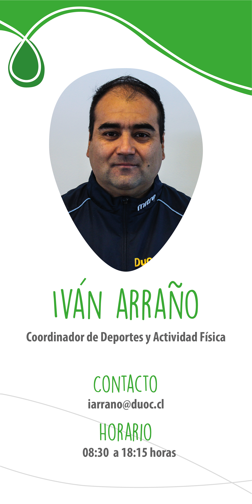

Si el deporte es tu pasión, te invitamos a los talleres deportivos que hemos preparado para ti. Además, súmate a una de las 13 selecciones y representa a Duoc UC en los Campeonatos de Universia, Adupri y Ligas IND. Infórmate sobre todas las alternativas con el Coordinador de Deportes en el Punto Estudiantil de tu sede.
Sí, completamente gratuitos, no tienen ningún costo para el alumno.
Fútbol, Voleibol, Basquetbol, Tenis de mesa, futbolito damas, natación, entrenamiento funcional.
Intersedes Duoc UC, juegos olímpicos Duoc y juegos de invierno Duoc además de campeonatos y ligas externas.
Queda en tu historial académico como NO LOGRADO.
Todos los optativos deportivos tienen 4 créditos.
No, siempre hay un profesor realizando la clase de natación.
Dos veces a la semana, de lunes a viernes.
NO, ya que no eres alumnos regular de Duoc UC y el seguro no cubre ningún accidente.
El taller queda como NO LOGRADO y queda en tu historial académico.
Sí, solo con la credencial.